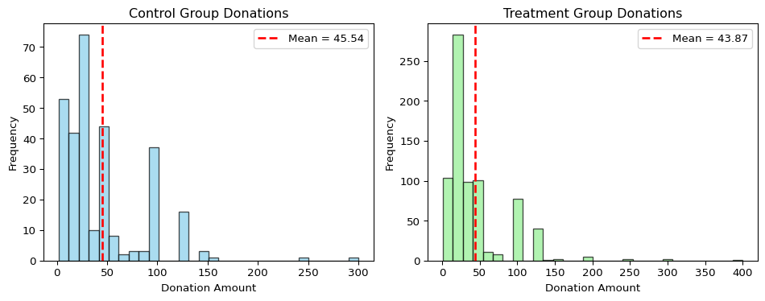
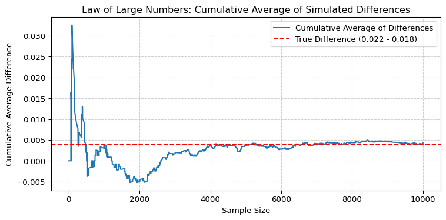
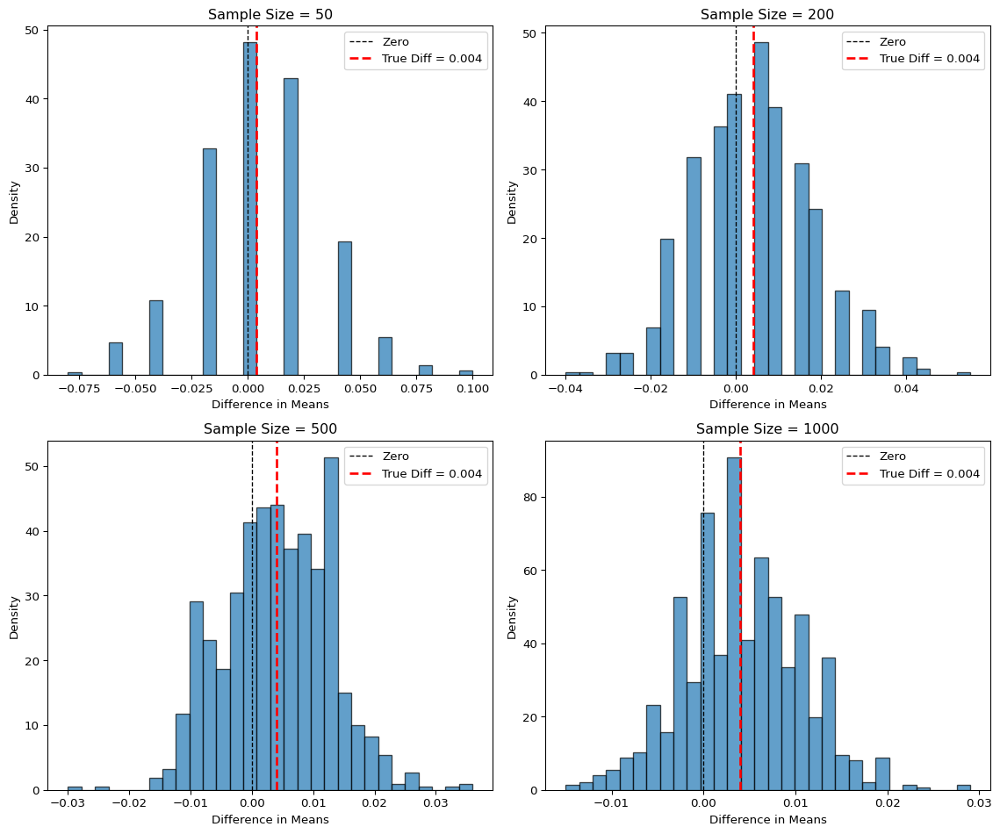

Dean Karlan at Yale and John List at the University of Chicago conducted a field experiment to test the effectiveness of different fundraising letters. They sent out 50,000 fundraising letters to potential donors, randomly assigning each letter to one of three treatments: a standard letter, a matching grant letter, or a challenge grant letter. They published the results of this experiment in the American Economic Review in 2007. The article and supporting data are available from the AEA website and from Innovations for Poverty Action as part of Harvard’s Dataverse.
The experiment was designed to understand how changes in the perceived “price” of giving affect charitable behavior. Matching grant letters offered donors the opportunity to have their gifts matched by a leadership donor at varying rates, either $1:$1, $2:$1, or $3:$1. This effectively lowers the cost of providing a dollar to the charity. Additionally, the researchers randomized the stated size of the matching grant (e.g., $25,000 or $100,000) and varied the suggested donation amount based on past donor behavior. This allowed for a nuanced investigation of how framing and financial incentives influence both the likelihood of giving and the amount given.
The experiment was embedded in a real-world fundraising campaign conducted by a politically liberal nonprofit organization, making it a natural field experiment rather than a lab-based or hypothetical one. The study found that the mere presence of a matching grant substantially increased response rates and average donations. However, increasing the match ratio above 1:1 had no significant additional effect, suggesting that psychological framing, rather than purely economic incentives, plays a key role in donor decision-making. These findings have important implications for fundraising strategy, behavioral economics, and the broader understanding of prosocial behavior.
This project seeks to replicate their results.
Data
Description
import pandas as pdimport numpy as npfrom scipy import statsfrom scipy.stats import ttest_indimport statsmodels.api as smimport statsmodels.formula.api as smfimport matplotlib.pyplot as pltdf = pd.read_stata("karlan_list_2007.dta")df.describe()
The history saving thread hit an unexpected error (DatabaseError('database disk image is malformed')).History will not be written to the database.
treatment
control
ratio2
ratio3
size25
size50
size100
sizeno
askd1
askd2
...
redcty
bluecty
pwhite
pblack
page18_39
ave_hh_sz
median_hhincome
powner
psch_atlstba
pop_propurban
count
50083.000000
50083.000000
50083.000000
50083.000000
50083.000000
50083.000000
50083.000000
50083.000000
50083.000000
50083.000000
...
49978.000000
49978.000000
48217.000000
48047.000000
48217.000000
48221.000000
48209.000000
48214.000000
48215.000000
48217.000000
mean
0.666813
0.333187
0.222311
0.222211
0.166723
0.166623
0.166723
0.166743
0.222311
0.222291
...
0.510245
0.488715
0.819599
0.086710
0.321694
2.429012
54815.700533
0.669418
0.391661
0.871968
std
0.471357
0.471357
0.415803
0.415736
0.372732
0.372643
0.372732
0.372750
0.415803
0.415790
...
0.499900
0.499878
0.168561
0.135868
0.103039
0.378115
22027.316665
0.193405
0.186599
0.258654
min
0.000000
0.000000
0.000000
0.000000
0.000000
0.000000
0.000000
0.000000
0.000000
0.000000
...
0.000000
0.000000
0.009418
0.000000
0.000000
0.000000
5000.000000
0.000000
0.000000
0.000000
25%
0.000000
0.000000
0.000000
0.000000
0.000000
0.000000
0.000000
0.000000
0.000000
0.000000
...
0.000000
0.000000
0.755845
0.014729
0.258311
2.210000
39181.000000
0.560222
0.235647
0.884929
50%
1.000000
0.000000
0.000000
0.000000
0.000000
0.000000
0.000000
0.000000
0.000000
0.000000
...
1.000000
0.000000
0.872797
0.036554
0.305534
2.440000
50673.000000
0.712296
0.373744
1.000000
75%
1.000000
1.000000
0.000000
0.000000
0.000000
0.000000
0.000000
0.000000
0.000000
0.000000
...
1.000000
1.000000
0.938827
0.090882
0.369132
2.660000
66005.000000
0.816798
0.530036
1.000000
max
1.000000
1.000000
1.000000
1.000000
1.000000
1.000000
1.000000
1.000000
1.000000
1.000000
...
1.000000
1.000000
1.000000
0.989622
0.997544
5.270000
200001.000000
1.000000
1.000000
1.000000
8 rows × 48 columns
Variable Definitions
Variable
Description
treatment
Treatment
control
Control
ratio
Match ratio
ratio2
2:1 match ratio
ratio3
3:1 match ratio
size
Match threshold
size25
$25,000 match threshold
size50
$50,000 match threshold
size100
$100,000 match threshold
sizeno
Unstated match threshold
ask
Suggested donation amount
askd1
Suggested donation was highest previous contribution
askd2
Suggested donation was 1.25 x highest previous contribution
askd3
Suggested donation was 1.50 x highest previous contribution
ask1
Highest previous contribution (for suggestion)
ask2
1.25 x highest previous contribution (for suggestion)
ask3
1.50 x highest previous contribution (for suggestion)
amount
Dollars given
gave
Gave anything
amountchange
Change in amount given
hpa
Highest previous contribution
ltmedmra
Small prior donor: last gift was less than median $35
freq
Number of prior donations
years
Number of years since initial donation
year5
At least 5 years since initial donation
mrm2
Number of months since last donation
dormant
Already donated in 2005
female
Female
couple
Couple
state50one
State tag: 1 for one observation of each of 50 states; 0 otherwise
nonlit
Nonlitigation
cases
Court cases from state in 2004-5 in which organization was involved
statecnt
Percent of sample from state
stateresponse
Proportion of sample from the state who gave
stateresponset
Proportion of treated sample from the state who gave
stateresponsec
Proportion of control sample from the state who gave
stateresponsetminc
stateresponset - stateresponsec
perbush
State vote share for Bush
close25
State vote share for Bush between 47.5% and 52.5%
red0
Red state
blue0
Blue state
redcty
Red county
bluecty
Blue county
pwhite
Proportion white within zip code
pblack
Proportion black within zip code
page18_39
Proportion age 18-39 within zip code
ave_hh_sz
Average household size within zip code
median_hhincome
Median household income within zip code
powner
Proportion house owner within zip code
psch_atlstba
Proportion who finished college within zip code
pop_propurban
Proportion of population urban within zip code
Balance Test
As an ad hoc test of the randomization mechanism, I provide a series of tests that compare aspects of the treatment and control groups to assess whether they are statistically significantly different from one another.
# Define variables to testvariables = {"pwhite": "Proportion White","pblack": "Proportion Black","page18_39": "Proportion Age 18-39","ave_hh_sz": "Average Household Size"}results = []for var, label in variables.items():# Subset data treat = df[df["treatment"] ==1][var].dropna() control = df[df["treatment"] ==0][var].dropna()# Manual t-test diff = treat.mean() - control.mean() se = np.sqrt(treat.var(ddof=1)/len(treat) + control.var(ddof=1)/len(control)) t_stat = diff / se df_total =len(treat) +len(control) -2 p_val_ttest =2* (1- stats.t.cdf(np.abs(t_stat), df=df_total))# Regression model = smf.ols(f"{var} ~ treatment", data=df).fit() coef = model.params["treatment"] p_val_reg = model.pvalues["treatment"] results.append({"Variable": label,"Diff (Treat - Control)": diff,"T-test p-value": p_val_ttest,"Regression Coef": coef,"Regression p-value": p_val_reg })pd.DataFrame(results)
Variable
Diff (Treat - Control)
T-test p-value
Regression Coef
Regression p-value
0
Proportion White
-0.000913
0.576130
-0.000913
0.575308
1
Proportion Black
0.000129
0.922294
0.000129
0.921935
2
Proportion Age 18-39
-0.000124
0.901123
-0.000124
0.901029
3
Average Household Size
0.003012
0.410313
0.003012
0.409801
I tested four demographic variables: proportion white, proportion black, proportion aged 18–39, and average household size for balance between treatment and control groups using both two-sample t-tests and simple linear regressions. In all cases, the p-values were well above the 0.05 threshold, indicating no statistically significant differences between groups. Additionally, the t-test differences and regression coefficients matched exactly, confirming consistency between methods. These results suggest that the randomization was successful and that the treatment and control groups are comparable on these baseline characteristics, supporting the validity of subsequent causal inferences.
Experimental Results
Charitable Contribution Made
First, I analyze whether matched donations lead to an increased response rate of making a donation.
The bar charts demonstrate an approximately 5% difference between the proportions of donors in the treatment and control groups. The control group is made up of around 17% of donors while the treatment group is around 22%.
I tested whether people who received a fundraising letter with a matching donation offer were more likely to donate compared to those who received a standard letter. A t-test shows that the treatment group had a statistically significantly higher donation rate than the control group. This result is confirmed by a linear regression, where the coefficient on the treatment variable closely matches the observed difference in means and is statistically significant.
In practical terms, just mentioning that a matching donation is available makes people more likely to give. Even a small change in framing (e.g., adding a single paragraph about a match) meaningfully influences behavior. This supports the idea that people are motivated not just by the financial impact of their gift, but by social signals like the opportunity to “unlock” funds from another donor. It also reinforces how seemingly minor tweaks in messaging can have outsized effects in fundraising campaigns.
def summarize_model(model, dep_var="y"): coef = model.params se = model.bse pval = model.pvalues zval = model.tvalues # also t-values for OLS ci = model.conf_int() n =int(model.nobs) is_probit =hasattr(model, 'prsquared') # True for Probit/Logit, not for OLSif is_probit:print(f"### Probit Regression: {dep_var} ~ [predictors]")print(f"**Sample size:** {n}")print(f"**Pseudo R-squared:** {model.prsquared:.4f}")print(f"**Log-likelihood:** {model.llf:.1f}")print(f"**Model significance (LLR p-value):** {model.llr_pvalue:.4f}")else:print(f"### OLS Regression: {dep_var} ~ [predictors]")print(f"**Sample size:** {n}")print(f"**R-squared:** {model.rsquared:.4f}")print("\n| Variable | Coefficient | Std. Error | z/t-value | p-value | 95% CI |")print("|------------|-------------|------------|-----------|---------|-------------------|")for var in coef.index: ci_lower = ci.loc[var, 0] ci_upper = ci.loc[var, 1]print(f"| {var:<10} | {coef[var]:>11.4f} | {se[var]:>10.4f} | {zval[var]:>9.2f} | {pval[var]:>7.4f} | [{ci_lower:.3f}, {ci_upper:.3f}] |")
I estimated a probit regression to examine whether assignment to the treatment group receiving a matching donation offer increased the likelihood that an individual made a charitable donation. The dependent variable was “gave”, a binary indicator equal to 1 if any donation was made. The key explanatory variable was treatment, equal to 1 for individuals who received a matching offer.
The probit model results show a positive and statistically significant coefficient of 0.0868 on the treatment variable (p = 0.002). This matches the findings reported in Table 3, Column 1 of Karlan & List (2007), where the coefficient on treatment is also approximately 0.087 and highly significant.
This result confirms that simply including a matching grant offer in a fundraising letter increases the probability of giving. The significance of the coefficient suggests that the effect is not due to chance. While the magnitude of the effect is modest in absolute terms, its consistency across t-tests, OLS, and probit models strengthens the evidence that framing a donation as being matched can meaningfully influence donor behavior.
Differences between Match Rates
Next, I assess the effectiveness of different sizes of matched donations on the response rate.
# Limit to only people who received a treatment letter (match offered)treated = df[df['treatment'] ==1]# Get donation responses by match ratiogave_1to1 = treated[treated['ratio'] ==1]['gave']gave_2to1 = treated[treated['ratio'] ==2]['gave']gave_3to1 = treated[treated['ratio'] ==3]['gave']# Calculate means for each groupmean_1 = gave_1to1.mean()mean_2 = gave_2to1.mean()mean_3 = gave_3to1.mean()# Run t-testst_2_vs_1 = ttest_ind(gave_2to1, gave_1to1)t_3_vs_2 = ttest_ind(gave_3to1, gave_2to1)t_3_vs_1 = ttest_ind(gave_3to1,gave_1to1){"1:1 Match Rate": mean_1,"2:1 Match Rate": mean_2,"3:1 Match Rate": mean_3,"p-value: 2:1 vs 1:1": t_2_vs_1.pvalue,"p-value: 3:1 vs 2:1": t_3_vs_2.pvalue,"p-value: 3:1 vs 1:1": t_3_vs_1.pvalue}
{'1:1 Match Rate': np.float64(0.020749124225276205),
'2:1 Match Rate': np.float64(0.0226333752469912),
'3:1 Match Rate': np.float64(0.022733399227244138),
'p-value: 2:1 vs 1:1': np.float64(0.33453168549723933),
'p-value: 3:1 vs 2:1': np.float64(0.9600305283739325),
'p-value: 3:1 vs 1:1': np.float64(0.31010466370866724)}
To assess whether larger match ratios increase donation rates, I performed a series of t-tests comparing response rates among individuals assigned to 1:1, 2:1, and 3:1 match treatment groups. The donation rate was approximately 2.07% for the 1:1 group, 2.26% for 2:1, and 2.27% for 3:1. Although there is a small increase in the average response rate as the match ratio increases, none of the differences are statistically significant: the p-value comparing 2:1 to 1:1 is 0.335, and for 3:1 vs. 2:1 it is 0.960. Even the largest comparison (3:1 vs. 1:1) yields a p-value of 0.310, far above the conventional 0.05 threshold for significance.
These results support the authors’ “figures suggest” comment on page 8 of the paper: while the raw response rates rise slightly with higher match ratios, the increases are not statistically meaningful. This suggests that once a match is offered, increasing the size of that match even up to 3:1 does not further motivate donors to give
To assess whether the size of the match ratio influenced donation behavior, I regressed the binary outcome variable gave on dummy variables for 2:1 and 3:1 match ratios, using the 1:1 match as the baseline. The results show that neither the 2:1 nor 3:1 match ratios had a statistically significant effect on the likelihood of donating compared to the 1:1 match. The coefficient for ratio2 was 0.0019 (p = 0.338), and for ratio3 it was 0.0020 (p = 0.313), both with confidence intervals that include zero. The intercept, representing the baseline 1:1 match group, was 0.0207, consistent with earlier descriptive statistics. These findings confirm that increasing the size of the match beyond 1:1 does not meaningfully increase donation rates, reinforcing the paper’s conclusion that the presence of a match offer matters more than its size.
To further assess the effect of increasing the match ratio on donation rates, I calculated both raw and regression-based differences in response rates. The raw data show a donation rate of 2.07% for the 1:1 group, 2.26% for the 2:1 group, and 2.27% for the 3:1 group. The difference between 2:1 and 1:1 is approximately 0.0019, while the difference between 3:1 and 2:1 is just 0.0001. These match almost exactly the fitted differences obtained from the regression coefficients (0.0019 and 0.0001, respectively). The consistency between the raw and model-based estimates reinforces the conclusion that larger match ratios do not meaningfully increase the likelihood of giving. The small and statistically insignificant differences confirm that the presence of a match matters, but its generosity does not seem to influence donor behavior beyond that initial effect.
Size of Charitable Contribution
In this subsection, I analyze the effect of the size of matched donation on the size of the charitable contribution.
To assess whether offering a matching donation influenced not just the likelihood of giving but also the amount donated, I regressed the dollar amount of contributions on the treatment assignment indicator. The results show that the average donation in the control group was $0.81, as reflected in the intercept. Individuals in the treatment group gave $0.15 more on average, though this difference is not statistically significant at the 5% level (p = 0.063). While the coefficient is positive and suggestive of a modest increase in donation size, the lack of statistical significance means we cannot confidently conclude that the treatment had a reliable effect on donation amounts. This suggests that the primary effect of the matching offer was to increase participation, rather than the average amount given per donor.
To understand whether the treatment influenced how much people donated, conditional on having donated, I restricted the dataset to individuals who made a donation (gave > 0) and regressed amount on the treatment indicator. The results show that the average donation amount in the control group was approximately $45.54, while the treatment group gave $1.67 less on average, according to the regression coefficient. However, this difference is not statistically significant (p = 0.561), and the 95% confidence interval includes zero (−7.31 to 3.97). This indicates that among those who did choose to donate, being offered a matching grant did not significantly affect the donation amount.
# Separate treatment and control donorstreat_donors = donors[donors['treatment'] ==1]['amount']control_donors = donors[donors['treatment'] ==0]['amount']# Calculate meansmean_treat = treat_donors.mean()mean_control = control_donors.mean()# Plot: Control Groupplt.figure(figsize=(10, 4))plt.subplot(1, 2, 1)plt.hist(control_donors, bins=30, alpha=0.7, color='skyblue', edgecolor='black')plt.axvline(mean_control, color='red', linestyle='--', linewidth=2, label=f'Mean = {mean_control:.2f}')plt.title("Control Group Donations")plt.xlabel("Donation Amount")plt.ylabel("Frequency")plt.legend()# Plot: Treatment Groupplt.subplot(1, 2, 2)plt.hist(treat_donors, bins=30, alpha=0.7, color='lightgreen', edgecolor='black')plt.axvline(mean_treat, color='red', linestyle='--', linewidth=2, label=f'Mean = {mean_treat:.2f}')plt.title("Treatment Group Donations")plt.xlabel("Donation Amount")plt.ylabel("Frequency")plt.legend()plt.tight_layout()plt.show()

These histograms show the distribution of donation amounts among individuals who gave, separated by treatment and control groups. While both distributions are right-skewed, the average donation is slightly lower in the treatment group ($43.87) than in the control group ($45.54), indicating that the match offer did not increase conditional donation amounts.
Simulation Experiment
As a reminder of how the t-statistic “works,” in this section I use simulation to demonstrate the Law of Large Numbers and the Central Limit Theorem.
Suppose the true distribution of respondents who do not get a charitable donation match is Bernoulli with probability p=0.018 that a donation is made.
Further suppose that the true distribution of respondents who do get a charitable donation match of any size is Bernoulli with probability p=0.022 that a donation is made.
Law of Large Numbers
import numpy as npimport matplotlib.pyplot as plt# Simulate donation behavior: Bernoulli draws# 100,000 from control group, p = 0.018# 10,000 from treatment group, p = 0.022np.random.seed(42)control_draws = np.random.binomial(1, 0.018, 100000)treat_draws = np.random.binomial(1, 0.022, 10000)# Calculate pointwise differences between treatment and control drawsdiffs = treat_draws - control_draws[:10000] # align sizescumulative_avg = np.cumsum(diffs) / np.arange(1, len(diffs) +1)# Plot cumulative averageplt.figure(figsize=(8, 4))plt.plot(cumulative_avg, label='Cumulative Average of Differences')plt.axhline(0.004, color='red', linestyle='--', label='True Difference (0.022 - 0.018)')plt.title("Law of Large Numbers: Cumulative Average of Simulated Differences")plt.xlabel("Sample Size")plt.ylabel("Cumulative Average Difference")plt.legend()plt.grid(True, linestyle='--', alpha=0.6)plt.tight_layout()plt.show()

This plot illustrates the Law of Large Numbers by showing how the cumulative average of simulated differences in donation behavior between treatment and control groups stabilizes as the sample size increases. Initially, the cumulative average fluctuates widely due to random variation in small samples, but as more observations accumulate, the average converges toward the true difference in population means: 0.004 (marked by the red dashed line). This visual evidence confirms that with a large enough sample, the observed difference in donation rates between treatment and control becomes a reliable estimate of the actual treatment effect.
Central Limit Theorem
import numpy as npimport matplotlib.pyplot as plt# Simulation setupnp.random.seed(42)p_control =0.018p_treatment =0.022sample_sizes = [50, 200, 500, 1000]n_simulations =1000# Function to simulate one sample differencedef simulate_diffs(n, p1, p2, reps=1000): diffs = []for _ inrange(reps): c = np.random.binomial(1, p1, n) t = np.random.binomial(1, p2, n) diffs.append(np.mean(t) - np.mean(c))return np.array(diffs)# Generate and plotplt.figure(figsize=(12, 10))for i, n inenumerate(sample_sizes, 1): diffs = simulate_diffs(n, p_control, p_treatment) plt.subplot(2, 2, i) plt.hist(diffs, bins=30, edgecolor='black', alpha=0.7, density=True) plt.axvline(0, color='black', linestyle='--', linewidth=1, label='Zero') plt.axvline(0.004, color='red', linestyle='--', linewidth=2, label='True Diff = 0.004') plt.title(f"Sample Size = {n}") plt.xlabel("Difference in Means") plt.ylabel("Density") plt.legend()plt.tight_layout()plt.show()

These four histograms illustrate the Central Limit Theorem by showing the sampling distribution of the difference in means between treatment and control groups across varying sample sizes (50, 200, 500, and 1000). At smaller sample sizes (e.g., 50), the distribution is wide and irregular, and zero frequently appears near the center—indicating that we might observe no difference simply due to sampling variability. As the sample size increases, the distribution becomes more concentrated and symmetric, and the center of the distribution shifts closer to the true difference of 0.004 (indicated by the red dashed line). By the time we reach a sample size of 1000, the sampling distribution is tightly centered around the true effect, and zero lies in the tail rather than the center. This pattern highlights how increasing sample size leads to more precise and reliable estimates, reducing the likelihood that random chance obscures true treatment effects